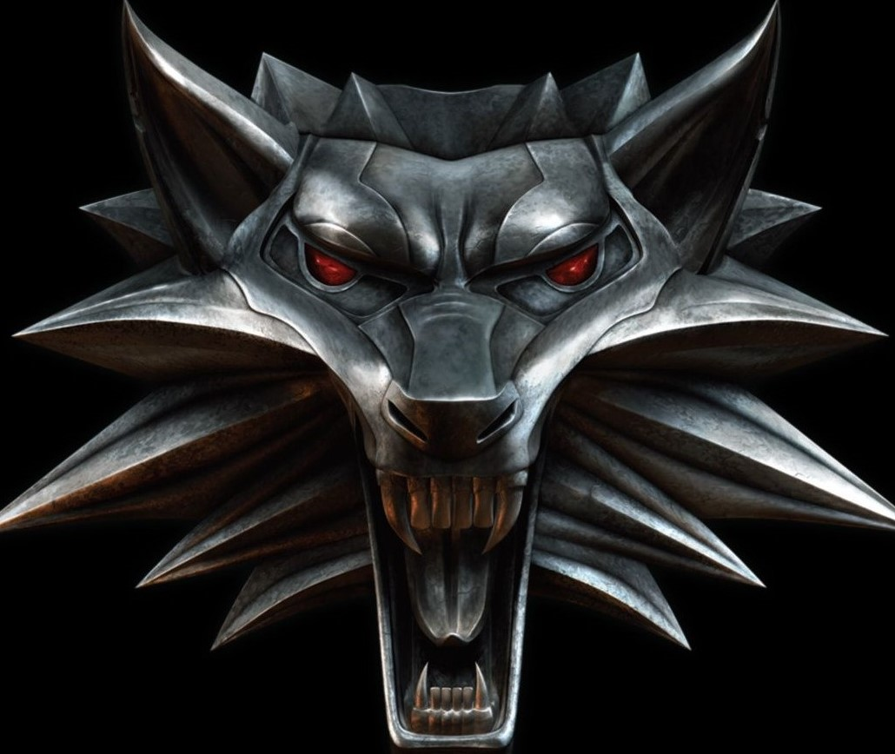
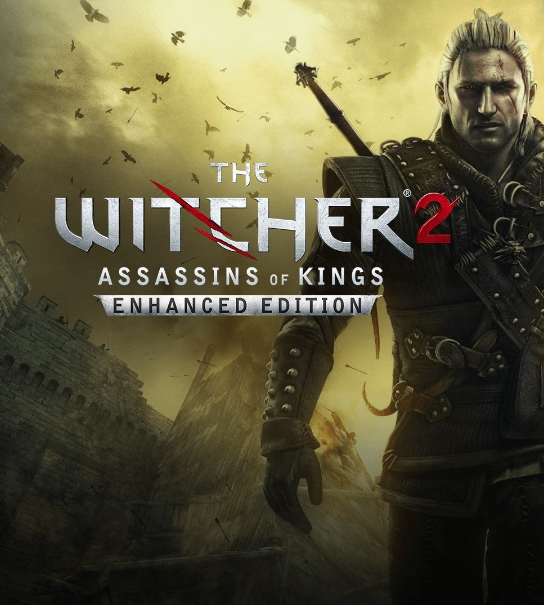

THE WITCHER
THE WITHER
The Witcher je akční hra na hrdiny z roku 2007 vyvinutá CD Projekt Red pro Microsoft Windows a CD Projekt na OS X. Vycházela z fantasy románové série The Witcher od polského autora Andrzeje Sapkowského. Příběh hry se odehrává po událostech hlavní ságy. To bylo vydáno v roce 2007 k pozitivním recenzím od kritiků a získalo celkové skóre 81/100 na Metacritic. V roce 2009 bylo naplánováno vydání konzolové verze The Witcher: Rise of the White Wolf využívající zcela nový engine a bojový systém. Toto bylo pozastaveno v důsledku problémů s platbami u konzolových vývojářů Widescreen Games. První hra má k dnešnímu dni dvě pokračování, konkrétně The Witcher 2: Assassins of Kings v roce 2011 a The Witcher 3: Wild Hunt v roce 2015. V Zaklínači jsou k dispozici tři styly kamery: dvě izometrické perspektivy, kde se k ovládání většiny funkcí používá myš, a pohled přes rameno, který hráče přibližuje k boji ve hře a zároveň omezuje výhled. Ve všech třech zobrazeních lze ovládací prvky změnit tak, aby byly primárně zaměřeny na myš nebo na kombinaci klávesnice a myši.
Hráči si mohou vybrat jeden ze tří bojových stylů, které použijí v různých situacích a proti různým nepřátelům. Rychlý styl umožňuje rychlejší a méně škodlivé útoky s vyšší šancí zasáhnout rychlejší nepřátele; silný styl způsobí větší poškození výměnou za pomalou rychlost útoku a nižší šanci zasáhnout rychlejší nepřátele; a skupinový styl obsahuje rozsáhlé útoky, které se nejlépe uplatní, pokud je Geralt obklíčen. Hráč může kdykoli přepínat mezi styly. Oba Geraltovy hlavní meče mají také výrazně odlišné bojové styly od jiných zbraní a slouží specifickým účelům. Ocelová čepel se používá k boji proti lidem a dalším bytostem z masa a kostí, zatímco stříbrný meč je účinnější proti nadpřirozeným nestvůrám a zvířatům (na některé z nich nemusí mít ocel žádný účinek). S přesným načasováním může hráč propojit Geraltovy útoky do komb a účinněji poškozovat nepřátele.
Alchymie je významnou součástí hry. Hráč může vytvářet lektvary, které zvyšují zdraví nebo regeneraci vytrvalosti, umožňují Geraltovi vidět ve tmě nebo poskytují další blahodárné účinky. Recepty na tyto lektvary se lze naučit pomocí svitků nebo experimentováním. Jakmile hráč vytvoří neznámý lektvar, může se rozhodnout, že ho vypije, ale pokud lektvar selže, Geralta otráví nebo bude mít jiné škodlivé účinky. Pokaždé, když Geralt pije lektvary, zvyšují úroveň toxicity jeho těla. To lze snížit pitím speciálního lektvaru nebo meditací v hostinci či krbu. Kromě lektvarů může hráč vytvářet oleje používané ke zvýšení poškození způsobeného zbraněmi. Mohou také vytvářet bomby pro použití jako zbraně v boji. Ani jeden nemůže být vytvořen, dokud nejsou přiděleny talentové body do odpovídajících dovedností.
Systém časově odložených rozhodnutí-důsledků znamená, že důsledky rozhodnutí hráčů se projeví v spiknutí v pozdějších aktech hry. To pomáhá odvrátit přístup ukládání a opětovného načítání k rozhodování. Přispívá to také k hodnotě znovuhratelnosti hry, protože důsledky vyplývající z rozhodnutí hráče mohou vést k významným rozdílům v událostech, které se odehrají později, a nakonec k velmi odlišnému hernímu zážitku než v předchozích hrách. Hráč se často ocitne v situaci, kdy si vybírá mezi menším ze dvou zel.
THE WITCHER: ASSASINS OF KINGS
THE WITCHER: ASSASINS OF KINGS
The Witcher 2: Assassins of Kings je akční videohra na hrdiny z roku 2011 vyvinutá společností CD Projekt Red, založená na sérii fantasy románů Zaklínač od Andrzeje Sapkowského. Jedná se o pokračování hry The Witcher z roku 2007 a druhý hlavní díl ze série videoher The Witcher's. Byl vydán pro Microsoft Windows, Xbox 360, OS X a Linux. Hráč řídí akce Geralta z Rivie, lovce monster známého jako Zaklínač. Fantasy svět, ve kterém se jeho dobrodružství odehrávají, vděčí za mnohé polské historii a slovanské mytologii. Hra byla kritickým i komerčním úspěchem a do září 2014 se jí prodalo přes 8 milionů kopií. Třetí díl série, The Witcher 3: Wild Hunt, byl vydán v květnu 2015.
Hratelnost Zaklínače 2 je výrazným odklonem od herního předchůdce. Například boj je mnohem složitější, s přídavky ve formě schopností klást pasti a mířit a házet zbraně na dálku. Hlavní hrdina, Geralt, má vylepšený útočný a obranný arzenál se širokou škálou zbraní na blízko a na dálku, brnění, bomb, pastí a sekundárních zbraní, jako jsou sekery a lopaty. Upgrady jsou rozděleny do čtyř odlišných cest: počáteční tréninková cesta, která zahrnuje zobecněné upgrady pro různé základní schopnosti a do kterých je třeba investovat, než bude možné přistupovat k ostatním cestám; šerm, který zlepšuje Geraltovy schopnosti v boji s mečem; alchymie, která zahrnuje výhody, jako je snížení negativních účinků lektvarů; a magie, která vylepšuje znamení Zaklínače.
Zaklínač 2 obsahuje v určitých částech hry stealth režim, kde hráči musí zůstat neodhaleni, když se dostanou k určitému cíli. Hráči mají možnost omráčit nepřátele, pokud se Geraltovi podaří dostat se za ně, ale hráč může zvolit méně rafinovaný přístup a zapojit stráže do boje.
Hráč ovládá Geralta z Rivie, který je jedním z mála zbývajících čarodějů – vylepšených a vycvičených lidí se speciálními schopnostmi, kteří loví monstra, aby se živili. The Witcher 2: Assassins of Kings obsahuje mnoho různých cest a příběhů spolu s mnoha konci.
Na začátku hry je Geralt ve vězení podezřelý z vraždy Foltesta, krále Temerie. Velitel temerských speciálních jednotek Vernon Roche vyslýchá Geralta a dozvídá se příběh, který vedl od Geralta jako Foltestovy pravé ruky k zajatci. Před a během událostí Zaklínače měl Foltest tajný vztah s baronkou jménem Maria Louisa La Valette, který vedl ke dvěma dětem, Anais a Boussy. Nějakou dobu poté, co Geralt zachránil Foltesta před zaklínačským vrahem (na konci Zaklínače), se Foltest pokusil získat jeho děti a přivést je k sobě do Vizimy. Maria se nechtěla vzdát dětí a Foltest vedl válku, aby si je nárokoval. Geraltovi se podařilo Foltesta doprovodit ke svým dětem, ale neznámý útočník Foltesta před zmizením zabije a Geralt tak zůstane jediným podezřelým. Po výslechu se Roche rozhodne, že Geralt je nevinný a pomůže mu uniknout z vězení. Ti dva se spolu s čarodějkou Triss Merigoldovou vydají hledat vraha králů.
THE WITCHER: WILD HUNT

THE WITCHER: WILD HUNT
Zaklínač 3: Divoký hon je akční hra na hrdiny vyvinutá polským vývojářem CD Projekt Red a poprvé vydaná v roce 2015. Jedná se o pokračování hry z roku 2011 The Witcher 2: Assassins of Kings a třetí a poslední hlavní hru v Série videoher Zaklínač hraná v otevřeném světě s perspektivou třetí osoby. Hry jsou založeny na sérii fantasy románů Zaklínač od Andrzeje Sapkowského.
Hra se odehrává ve fiktivním fantasy světě založeném na slovanské mytologii. Hráči ovládají Geralta z Rivie, nájemného zabijáka monster známého jako Zaklínač, a hledají jeho adoptivní dceru, která je na útěku před divokým honem z jiného světa. Hráči bojují s mnoha nebezpečími hry se zbraněmi a magií, interagují s postavami, které nejsou hráči, a plní questy, aby získali zkušenostní body a zlato, které se používají ke zvýšení Geraltových schopností a nákupu vybavení. Příběh hry má tři možné konce, které jsou určeny hráčovými volbami v klíčových bodech vyprávění.
Vývoj začal v roce 2011 a trval tři a půl roku. Středoevropské a severoevropské kultury tvořily základ herního světa. REDengine 3 umožnil vývojářům vytvořit komplexní příběh, aniž by byl ohrožen otevřený svět hry. Hudbu primárně složil Marcin Przybyłowicz a hrál ji Braniborský státní orchestr.
Zaklínač 3: Divoký hon byl vydán pro Microsoft Windows, PlayStation 4 a Xbox One v květnu 2015, verze pro Nintendo Switch byla vydána v říjnu 2019 a verze pro PlayStation 5 a Xbox Series X/S mají být vydány v roce 2022. Hra získalo uznání kritiky, s chválou za svou hratelnost, vyprávění, světový design, boj a vizuální stránku, i když dostalo menší kritiku kvůli technickým problémům. Získala řadu ocenění jako hra roku a byla uváděna jako jedna z nejlepších videoher, jaké kdy byly vytvořeny. Byla vydána také dvě rozšíření, která sklidila uznání kritiků: Hearts of Stone a Blood and Wine. Edice Game of the Year byla vydána v srpnu 2016 se základní hrou, rozšířeními a veškerým obsahem ke stažení. Hry se prodalo přes 30 milionů kopií, což z ní dělá jednu z nejprodávanějších videoher všech dob.
The Witcher 3: Wild Hunt je akční RPG z pohledu třetí osoby. Hráči ovládají Geralta z Rivie, zabijáka monster známého jako Zaklínač. Geralt chodí, běží, kutálí se a uhýbá a (poprvé v sérii) skáče, šplhá a plave. Má různé zbraně, včetně bomb, kuše a dvou mečů (jeden ocelový a jeden stříbrný). Ocelový meč se používá především k zabíjení lidí, zatímco stříbrný meč je účinnější proti tvorům a nestvůrám. Hráči mohou své meče libovolně tasit, přepínat a zasouvat do pochvy. Existují dva způsoby útoku na blízko; lehké útoky jsou rychlé, ale slabé a těžké útoky jsou pomalé, ale silné. Hráči mohou svými meči blokovat a čelit nepřátelským útokům. Meče mají omezenou výdrž a vyžadují pravidelnou opravu. Kromě fyzických útoků má Geralt k dispozici pět magických znamení: Aard, Axii, Igni, Yrden a Quen. Aard vyzve Geralta, aby rozpoutal telekinetický výbuch, Axii zmátla nepřátele, Igni je spálila, Yrden je zpomalil a Quen nabídne hráčům dočasný ochranný štít. Znaky využívají výdrž a nelze je používat donekonečna. Hráči mohou pomocí mutagenů zvýšit Geraltovu magickou sílu. Geralt ztrácí zdraví, když je napaden nepřáteli, i když nošení brnění může pomoci snížit ztrátu zdraví. Zdraví se obnovuje meditací nebo spotřebním zbožím, jako je jídlo a lektvary. Hráči občas ovládají Ciri, Geraltovu adoptivní dceru, která se dokáže teleportovat na krátké vzdálenosti.